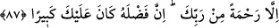

KUR’AN’IN BİR BENZERİNİ
GETİREMEZLER
86. Andolsun ki, biz dilersek sana vahyettiğimizi ortadan kaldırırız; sonra onun
(geri alınması) için bize karşı sana bir yardımcı bulamazsın.
87. Ancak Rabbinin rahmeti (sayesinde Kur’an bâki kalmıştır). Çünkü O’nun
sana lütufkârlığı çok büyüktür.
88. De ki: Andolsun, bu Kur’an’ın bir benzerini ortaya koymak üzere insanlar ve
cinler bir araya gelseler, birbirlerine destek de olsalar, onun benzerini ortaya
getiremezler.
“Andolsun ki, biz dilersek sana vahyettiğimizi ortadan kaldırırız;” Yâni, Allah’a
yemin olsun ki, biz dileseydik Kur’an’ı tamamen ortadan kaldırır, onu mushaflardan ve
kalblerden siler ve ondan hiçbir eser bırakmazdık. Sen de kitap nedir bilmez bir halde
kalakalırdın. Bu söz bir faraziye kabîlindendir. Bir gaye için muhal farz edilebilir.
Böyle olunca muhal olmayan bir şey nasıl farz edilmesin?
Ortadan kalktıktan “sonra onun” Kur’an’ın geri alınması “için bize karşı sana bir
yardımcı bulamazsın.”
Kâşifî şöyle der: “İmdi onu izâle ettikten sonra sen kendin için onu sinelere ve
mushaflara geri getirecek bir vekil bulamazsın.”
87. Ancak Rabbinin rahmeti (sayesinde Kur’an bâki kalmıştır). Çünkü O’nun
sana lütufkârlığı çok büyüktür.
“Ancak Rabbinin rahmeti” sayesinde Kur’an bâki kalmıştır. Yâni Rabbi’nin sana
rahmet etmesi ve onu sana geri göndermesi müstesnâ. Sanki O’nun rahmeti bunun sana
geri döndürülmesine vekil gibidir.
Kâşifî şöyle der: “Fakat senin Rabbinin bir rahmetidir ki o Kur’ân’ı bâkî kılar ve yok
etmez.